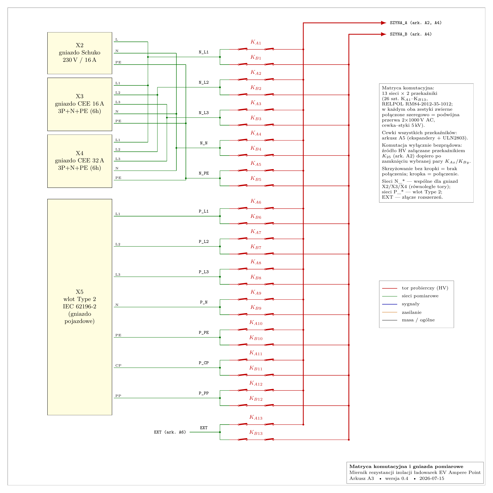

1. Czym jest ta macierz naprawdę
Miernik bada rezystancję izolacji między każdą parą styków złączy ładowarki: Schuko (3 styki → 3 pary), CEE 16/32 A (5 styków → 10 par), wtyk Type 2 (7 styków → 21 par). Pełna matryca „każdy z każdym” wymagałaby przekaźnika na parę — dla 12 sieci to 66 punktów. Projekt używa architektury dwóch szyn pomiarowych (A i B): każda z 13 sieci (5 strony zasilania + 7 strony pojazdu + EXT) ma dwa przekaźniki — KAi do szyny probierczej A i KBi do szyny powrotnej B. Wybór pary X–Y = zamknięcie dokładnie KA,X i KB,Y. To redukcja liczby łączników z O(n²) do O(2n): 26 przekaźników zamiast 66, a każda z 66+ kombinacji par (także międzystronnych) pozostaje osiągalna.

Modul\miernik-izolacji\podglad\.Trzy właściwości, które odróżniają tę macierz od „podręcznikowej”
- DC, µA Macierz przełącza napięcie stałe i prądy mikroamperowe. Klasyczne zmartwienia macierzy testowych — rezystancja styków (mΩ), stuby dla szybkich sygnałów — są tu bez znaczenia (µA × 100 mΩ = nanowolty; sygnał to czyste DC). Liczy się coś odwrotnego: rezystancja izolacji OTWARTEJ przerwy, bo otwarte zestyki wiszą równolegle do mierzonych megaomów.
- ZIMNA KOMUTACJA Przekaźniki nigdy nie łączą ani nie przerywają prądu: para zamykana przy wyłączonym źródle, źródło załącza osobny K25, a przed rozłączeniem obiekt jest rozładowany (K26/R20, próg 25 V). Parametr „napięcie łączeniowe DC” przekaźnika przestaje być ograniczeniem — istotna jest tylko statyczna wytrzymałość przerwy.
- SNEAK ≠ ZWARCIE Przy dwóch szynach klasyczna ścieżka pasożytnicza (przypadkowe zestawienie cudzego toru) wymaga sklejenia przekaźnika — poprawny sterownik zamyka zawsze tylko 1×KA + 1×KB. Sneak paths istnieją natomiast rezystancyjnie: przez skończoną izolację otwartych przerw (sekcja 4). To jest właściwy „sęk”.
2. Historia „sęka”: dobór elementu komutacyjnego (D6 → D8)
To dokładnie ten fragment projektu, który w rozmowie nazwano „sękiem”. Chronologia z rejestru decyzji:
| Krok | Element | Co się okazało |
|---|---|---|
| D6 (it. 1) | kontaktron Standex-Meder SIL12-1A72-71D | Założono „1000 V DC przy komutacji bezprądowej”. Weryfikacja kartą (TME): napięcie łączeniowe 200 V DC, wytrzymałość przerwy 500 V DC — zero marginesu przy probierczym 500 V. ODRZUCONY |
| D8 war. 1 | kontaktron HV Sensata/Cynergy3 DAT71210 (7 kV, styk wolframowy) | Technicznie właściwy; w TME 0 szt., ~80–150 zł/szt. → 26 szt. = 2000–4000 zł, poza budżetem (cały przyrząd: 1197 zł). NIEDOSTĘPNY |
| D8 war. 3 | obniżenie probierczego do 250 V | Rezygnacja z wartości normowej 500 V dla obwodów 230/400 V (IEC 60364-6). ODRZUCONE |
| D8 wybór | RELPOL RM84-2012-35-1012 (DPDT 8 A, cewka 12 V/360 Ω) | Oba zestyki zwierne połączone szeregowo = podwójna przerwa; probiercze przerwy 2×1000 V AC, cewka–styki 5 kV, odstępy ≥10 mm; ~6–8 zł/szt., dostępny masowo. WYBRANY (30 szt.) |
Dlaczego podwójna przerwa działa (i jaki ma haczyk)
- Wytrzymałość statyczna: nawet gdyby podział napięcia między dwie przerwy był skrajnie nierówny (dzieli się według rezystancji upływu przerw, których nikt nie gwarantuje), pojedyncza przerwa RM84 wytrzymuje probierczo 1000 V AC — samo 500 V DC na jednej przerwie mieści się z zapasem. Druga przerwa to margines, nie warunek.
- Redundancja na sklejenie: żeby punkt komutacyjny zamknął się trwale, skleić musiałyby się oba zestyki tego samego przekaźnika. Przy zimnej komutacji (brak łuku, brak prądu) sklejenie jest i tak mało prawdopodobne — podwójna przerwa czyni je praktycznie podwójnie mało prawdopodobnym.
- HACZYK Rezystancja izolacji otwartej przerwy nie jest parametrem z karty katalogowej. Przyjęto typowe 10⁹ Ω/przerwę — od tej liczby zależy cały budżet błędu i zakres 100 MΩ (sekcja 4). To jest „główny problem do sprawdzenia” z notatki — patrz sekcja 5.
- Ekonomia decyzji: komutacja 26 punktów za ~200 zł zamiast 2000–4000 zł, kosztem dwóch rzeczy: niegwarantowanej Rizo przerwy (ryzyko mierzalne w prototypie) i większych cewek (33 mA/szt. — ale jednocześnie pracują tylko 3–4 cewki: KA+KB+K25+HL1 ≈ 130 mA z zasilacza 15 W).
3. „250 V — rezystancja między pinami”: klasy par pomiarowych
Fraza z notatki opisuje sedno rozdziału „Macierz par pomiarowych”: nie każdą parę pinów wolno mierzyć pełnym napięciem, bo sprawna ładowarka ma między niektórymi pinami własną elektronikę. Projekt przypisuje każdej parze klasę (D3):
| Klasa | Napięcie | Które pary | Dlaczego / co znaczy wynik |
|---|---|---|---|
| I | 500 V DC | siłowe↔PE, fazy między sobą (obie strony) | czysta izolacja; kryterium normowe R ≥ 1 MΩ (IEC 60364-6) |
| Z | 250 V DC | L–N strony zasilania | równolegle pracuje zasilacz ładowarki z warystorami; 250 V leży poniżej progu przewodzenia warystora 275 V AC (~430 V DC) — pomiar pokazuje rezystory rozładowujące zasilacza (0,5–2 MΩ); wynik interpretowany, nie kwalifikowany progiem |
| E | 50 V DC, ≤1 mA | wszystko z CP lub PP | elektronika małego napięcia (generator CP ±12 V przez 1 kΩ; rezystor kodujący PP–PE: 220 Ω dla 32 A / 680 Ω dla 20 A / 1,5 kΩ dla 13 A); diagnostyka porównaniem z odczytem oczekiwanym |
Stąd „250 V — rezystancja między pinami”: dla par z zasilaczem mierzy się rezystancję obniżonym napięciem 250 V, świadomie — nie po to, by wyszło „ładniej”, tylko żeby nie otworzyć warystorów (co dałoby fałszywy wynik „zła izolacja”) i niczego nie uszkodzić. Wynik takiej pary czyta się inaczej: ~1 MΩ to norma konstrukcyjna (rezystory rozładowujące), a podejrzane są wartości wyraźnie niższe.
Warto wiedzieć, że firmware wyznacza klasę pary regułą (pary.h → klasaPary()):
para z CP/PP → E; para (L*, N) po stronie zasilania → Z; reszta → I. Liczby par: Schuko 3+21=24,
CEE 10+21=31 (MAKS_PAR=31) — zgodnie z C(n,2) = 3/10/21. Notatka kierownika „około 8 par”
dla złącza 5-stykowego była zaniżona — poprawnie 10.
4. Fizyka macierzy: pełny model ścieżek pasożytniczych (+ uściślenie)
Podczas pomiaru pary X–Y wszystkie pozostałe punkty komutacyjne są otwarte, ale „otwarty” znaczy ~2×10⁹ Ω (dwie przerwy po ~10⁹ Ω), a nie nieskończoność. Sieć upływów wygląda tak:
Dwie rodziny ścieżek i co z nimi robi firmware
- Rodzina stała — z szyny A przez otwarte KA,z do sieci pływających i przez otwarte
KB,z do szyny B (po 4×10⁹ Ω na sieć; 13 sieci → ~3,1×10⁸ Ω, prąd ~1,6 µA przy 500 V).
Dochodzą stałe gałęzie K26 (rozładowanie), K28/K29 (wzorce) — także objęte zerem.
Firmware mierzy to pomiarem zerowym (wszystko otwarte, źródło załączone; osobno dla 50/250/500 V,
pomiar.h → pomiarZerowy()) i odejmuje od każdego wyniku. - Rodzina zależna od pary — otwarte przerwy KB,X i KA,Y leżą wprost równolegle z obiektem: ~10⁹ Ω łącznie. Dokumentacja (6.1.1) traktuje ten składnik jako nieusuwalny w całości → deklaruje błąd −1 % @ 10 MΩ, −5 % @ 50 MΩ, −10 % @ 100 MΩ i stąd kres zakresu 100 MΩ.
Uściślenie modelu (rachunek sprawdzony numerycznie)
Model 6.1.1 pomija subtelność, która działa na korzyść przyrządu: sieci X i Y uczestniczyły w pomiarze zerowym (wnosiły po 4×10⁹ Ω), a podczas pomiaru pary ich wkład zmienia się na po 2×10⁹ Ω (jedna przerwa zamiast dwóch). Odejmowane zero zawiera więc już połowę konduktancji ścieżek „nieusuwalnych”. Rezydualny upływ po korekcie zera to dokładnie ΔG = 2×(1/4−1/2)×10⁻⁹ S… czyli +0,5 nS ≡ 2×10⁹ Ω, a nie 10⁹ Ω:
| R obiektu | model dok. (rezyd. 1 GΩ) | model uściślony, obiekt „czysty” (rezyd. 2 GΩ) | obiekt wiąże 4 sieci (rezyd. ~0,67 GΩ) |
|---|---|---|---|
| 10 MΩ | −1,0 % | −0,5 % | −1,5 % |
| 50 MΩ | −4,8 % | −2,4 % | −7 % |
| 100 MΩ | −9,1 % | −4,8 % | −13 % |
Skąd trzecia kolumna: ładowarka sama „ożywia” sieci pływające. Sprawny egzemplarz łączy galwanicznie: P_PP↔P_PE (rezystor kodujący 220 Ω–1,5 kΩ), P_CP↔P_PE (obwód pilota), N_L↔N_N (rezystory zasilacza ~1 MΩ), N_PE↔P_PE (ciągłość PE) — wszystko ≪ 2 GΩ, więc z punktu widzenia upływów te sieci przestają być pływające i każda związana sieć dodaje ~0,25 nS przez swoją drugą przerwę. Przy pomiarze np. N_L1–N_PE w ładowarce CEE związane są typowo 4 sieci → rezydualnie ~0,67 GΩ. Wniosek: deklaracja −10 % @ 100 MΩ z dokumentacji jest w praktyce trafna, ale z innego powodu, niż podaje — mechanizm kompensacji przez zero i mechanizm wiązania sieci przez obiekt mniej więcej się znoszą. (Miła własność przy okazji: pomiar zerowy jest niezależny od tego, czy sieci są powiązane w „wyspy” — m sieci związanych daje tę samą konduktancję zera co m osobnych.)
pradZerowy × 11/13 (wkład tylko sieci nieużywanych) i osobno modelować przerwy pary — albo
zostawić jak jest i po prostu wiedzieć, że budżet błędu ma zapas przy obiekcie „czystym”, a wyczerpuje się
przy obiekcie wiążącym sieci. Przy Ro innym niż 10⁹ Ω wszystkie kolumny skalują się odwrotnie
proporcjonalnie — patrz sekcja 5.5. „Jak będą działały przekaźniki macierzowo” — co konkretnie sprawdzić
Główny problem z notatki to w istocie jedna niewiadoma i dwa testy.
Niewiadoma: Ro otwartej przerwy RM84
Karta katalogowa gwarantuje wytrzymałość przerwy, ale nie jej rezystancję izolacji. Cały zakres pomiarowy wisi na przyjętym 10⁹ Ω/przerwę:
| Ro przerwy (rzeczywiste) | Rezydualny upływ pary | Sensowny kres zakresu (błąd ≤ ~10 %) |
|---|---|---|
| 10¹⁰ Ω (suchy, czysty montaż) | ~20 GΩ / ~7 GΩ z obiektem | ≥ 100 MΩ z dużym zapasem OK |
| 10⁹ Ω (założenie projektu) | ~2 GΩ / ~0,7 GΩ | 100 MΩ — na styk, zgodnie z 6.1.1 OK z ryzykiem |
| 10⁸ Ω (wilgoć, topnik, brud) | ~0,2 GΩ / ~0,07 GΩ | ~10 MΩ — zakres załamany PROBLEM |
O Ro w praktyce decyduje nie sam przekaźnik, lecz montaż: resztki topnika, wilgoć, odległości ścieżek. Zalecenia konstrukcyjne: mycie płytki po lutowaniu, odstępy toru HV (w projekcie ≥8 mm), krótkie szyny A/B, lakier ochronny dopiero po pomiarze Ro (lakier bywa gorszy niż czyste FR-4).
Test 1 — prototypowy pomiar Ro (przewidziany w rozdz. „Wyzwania”)
Test 2 — autotest matrycy w firmware (rekomendacja, obecnie brak)
Obecny autotest (zero + wzorce K28/K29) sprawdza tor, ale nie wykrywa wprost sklejonego lub niedomykającego pojedynczego przekaźnika matrycy. Sklejony KA,z podnosi zero ledwie o ~0,1 µA (0,25→0,5 nS dla tej sieci) — poniżej progu wykrywalności, a skutkiem jest fałszywe równoległe dołączenie sieci z do każdego pomiaru. Proponowany skan (czas ~1–2 min, bez zmian sprzętu, wykonywany przy odłączonej ładowarce):
- Sklejenia KB: dla każdej sieci z: zamknij tylko KA,z, załącz źródło 500 V, zmierz prąd. Oczekiwane: ~prąd zerowy. Prąd bliski ograniczenia (~1,1 mA) ⇒ sklejony KB,z (albo zwarcie sieci z do szyny B). 13 kroków.
- Sklejenia KA: symetrycznie — zamknij tylko KB,z, źródło na A: prąd duży ⇒ sklejony KA,z. 13 kroków.
- Domykanie (czy przekaźnik w ogóle łączy): dla każdej sieci z: zamknij KA,z i KB,z (ta sama sieć!) — szyny zwarte przez sieć z: odczyt ~0 Ω (prąd = ograniczenie). Brak prądu ⇒ któryś przekaźnik nie domyka / przerwa w okablowaniu sieci. 13 kroków. Uwaga: to legalne tylko przy odłączonej ładowarce i jest jedyny przypadek celowego „zwarcia” A–B — prąd i tak ogranicza 440 kΩ.
Krok 3 to dokładnie „sprawdzenie, jak działają przekaźniki macierzowo”, którego nie zastąpi żaden pomiar
pojedynczego przekaźnika na stole: weryfikuje przekaźnik + gniazdo + wiązkę + adresację cewek
(błąd w mapie KAN_KA/KAN_KB objawi się jako „nie ta sieć zwiera”). Po każdej wymianie
przekaźnika lub ingerencji w wiązkę — skan obowiązkowy.
6. Luki i rekomendacje (znalezione podczas analizy)
| # | Obserwacja | Waga | Rekomendacja |
|---|---|---|---|
| 1 | Firmware nie mierzy ciągłości PE (para N_PE–P_PE). zbudujPary() generuje tylko pary
wewnątrz stron (3/10 + 21); dokumentacja wspomina pary międzystronne jako „tryb rozszerzony”, ale kod go
nie implementuje. Ciągłość PE to test bezpieczeństwa nr 1 każdego przewodu ładowarki — przyrząd ma pełną
architekturę, by go wykonać (zamknąć KA5+KB10), a go nie wykonuje. |
WYSOKA | Dodać do sekwencji parę PE–PE z logiką odwróconą (oczekiwane ~0 Ω = OK; megaomy = PRZERWA PE — wynik krytyczny). Napięcie: wystarczy 50 V (klasa E-podobna), nie 500 V. |
| 2 | Test przerwy stycznika (L1–vL1, L2–vL2, L3–vL3, N–vN przez otwarte przekaźniki ładowarki) — też opisany w dokumentacji jako tryb rozszerzony, nieobecny w firmware. Wykrywa sklejony stycznik ładowarki — usterkę realnie groźną (napięcie na wtyku bez sesji ładowania). | ŚREDNIA | Dodać 4 pary międzystronne. Uwaga: rozważyć 250 V zamiast 500 V — po stronie wtyku ładowarki może wisieć układ detekcji sklejenia stycznika / pomiaru napięcia (dzielnik do elektroniki), którego wytrzymałości nie znamy. |
| 3 | Pary fazowe klasy I (500 V) a warystory L–L. D3 zakłada warystory tylko L–N, ale część ładowarek trójfazowych ma ograniczniki także L–L i L–PE. 500 V DC > ~430 V DC progu warystora 275 V AC → warystor się otworzy i pomiar pokaże fałszywie niską „izolację” (uszkodzenia nie będzie — prąd ograniczony do 1,1 mA). | ŚREDNIA | Sprawdzić topologię ochrony przepięciowej w ładowarkach AP (schemat/oględziny). Jeśli L–L MOV występuje: pary fazowe strony zasilania przenieść do klasy Z (250 V) albo dodać interpretację „niski odczyt + kształt prądu = warystor”. |
| 4 | Zero a pary — model upływów (sekcja 4): dokumentacja liczy składnik pary jako w całości nieusuwalny, faktycznie zero kompensuje jego połowę; z drugiej strony obiekt wiążący sieci psuje zero. Netto deklaracje trafne, mechanizm opisany niedokładnie. | NISKA | Skorygować 6.1.1 (ścisły model) albo zostawić z komentarzem; opcjonalnie korekta
×11/13 w firmware. |
| 5 | Autotest nie wykrywa sklejonych przekaźników matrycy (podniesienie zera o ~0,1 µA jest niediagnostyczne). | ŚREDNIA | Skan matrycy 3×13 kroków z sekcji 5 (tylko software), uruchamiany na żądanie i po serwisie. |
| 6 | Drobiazg dokumentacyjny: D6 deklaruje „30 kanałów, zapas 2 z 32”; po dodaniu HL1 zajęte
jest 31 z 32 kanałów ekspanderów (zapas 1). Mapa w pary.h się zgadza (KA:13, KB:13,
K25/K26/K28/K29/HL1 na U3 GPB2–6). |
NISKA | Poprawić liczbę w D6/dokumentacji; przy rozbudowie (moduł EXT) pamiętać, że wolny został 1 kanał. |
| 7 | EXT jak tor HV: otwarte KA13/KB13 wiszą na szynach zawsze — brud/wilgoć na złączu rozszerzeń obniża Ro całej matrycy, a podczas pomiaru na EXT może pojawić się pełne 500 V. | NISKA | Zaślepka na X6 na co dzień; EXT objęty pomiarem zerowym automatycznie (jest 13. siecią) — nic więcej nie trzeba. |
Źródła
Pliki projektu (lokalnie, folder Modul na pulpicie)
- dokumentacja/projekt.pdf — rozdz. 2 (macierz par), 5 (architektura i przebieg), 6.1 (dobór komutacji i upływy — 6.1.1), 7/A3 (schemat matrycy), 15 (wyzwania)
- DECYZJE.md — D1 (dwie szyny), D3 (klasy napięć), D6→D8 (kontaktron → RM84 podwójna przerwa)
- WERYFIKACJA.md — karty katalogowe: SIL12 (negatywna), DAT71210, RM84/RM85
- firmware/miernik/pary.h i pomiar.h — mapa cewek, klasy par, pomiar zerowy, sekwencja
Karty katalogowe i dystrybucja
- RELPOL RM84/RM85 — karta katalogowa (PDF) — probiercze przerwy 1000 V AC, cewka–styki 5 kV
- TME — RM84-2012-35-1012
- TME — Standex-Meder SIL12-1A72-71D (parametry, które obaliły D6)
- TME — Sensata/Cynergy3 DAT71210 (kontaktron 7 kV — wariant odrzucony)
Wiedza ogólna: macierze, pomiary małych prądów, izolacja
- Pickering Interfaces — Switching Architectures KB (architektury macierzy, ograniczenia ścieżek)
- Keithley „Low Level Measurements Handbook” — biblia pomiarów wysokich rezystancji: upływy, guarding, absorpcja dielektryczna, wpływ wilgoci i topnika
- Merserwis — pomiar rezystancji izolacji wg PN-HD 60364-6 (napięcia probiercze 250/500/1000 V, progi 0,5/1 MΩ)
- Schneider Electrical Installation Guide — EV charging (kontekst: co siedzi w torze ładowarki)
Normy: IEC 60364-6 (napięcie probiercze i progi), IEC 61557-2 (wymagania dla mierników rezystancji izolacji — warto docelowo porównać przyrząd z tą normą), IEC 61851-1 (obwód CP), IEC 62196-2 (styki Type 2, kodowanie PP).